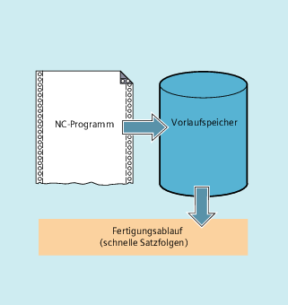

Je nach Ausbaustufe verfügt die Steuerung über eine bestimmte Menge sog. Vorlaufspeicher, die fertig aufbereitete Sätze vor der Abarbeitung speichern und im Fertigungsablauf als schnelle Satzfolgen ausgeben. Hierdurch lassen sich kurze Wege mit hohen Geschwindigkeiten abfahren. Soweit die Restzeit der Steuerung es zulässt, wird der Vorlaufspeicher grundsätzlich gefüllt.
Der Bearbeitungsabschnitt, der im Vorlaufspeicher zwischengespeichert werden soll, wird im Teileprogramm am Anfang mit "STOPFIFO" und am Ende mit "STARTFIFO" gekennzeichnet. Die Abarbeitung der aufbereiteten und zwischengespeicherten Sätze beginnt erst nach dem Befehl "STARTFIFO" oder wenn der Vorlaufspeicher voll ist.
Die automatische Vorlaufspeichersteuerung wird mit dem Befehl "FIFOCTRL" aufgerufen. "FIFOCTRL" wirkt zunächst genauso wie "STOPFIFO". Bei jeder Programmierung wird gewartet, bis der Vorlaufspeicher voll ist, dann beginnt die Abarbeitung. Unterschiedlich ist dagegen das Verhalten beim Leerlaufen des Vorlaufspeichers: mit "FIFOCTRL" wird ab einem Füllstand von 2/3 die Bahngeschwindigkeit zunehmend reduziert, um ein komplettes Leerlaufen und ein Abbremsen bis zum Stillstand zu verhindern.
Die Satzaufbereitung und -zwischenspeicherung wird angehalten, wenn im Satz der Befehl "STOPRE" programmiert ist. Der nachfolgende Satz wird erst dann ausgeführt, wenn alle vorher aufbereiteten und gespeicherten Sätze vollständig abgearbeitet sind. Der vorherige Satz wird im Genauhalt angehalten (wie G9).
| Achtung |
ProgrammabbruchBei eingeschalteter Werkzeugkorrektur und bei Spline-Interpolationen sollte kein "STOPRE" programmiert werden, da sonst zusammengehörige Satzfolgen unterbrochen werden. |
| STOPFIFO | |
| ... | |
| STARTFIFO |
| ... | |
| FIFOCTRL | |
| ... |
| ... | |
| STOPRE | |
| ... |
| Hinweis |
Die Befehle "STOPFIFO", "STARTFIFO", "FIFOCTRL" und "STOPRE" müssen im eigenen Satz programmiert werden. |
| "STOPFIFO" kennzeichnet den Beginn eines Bearbeitungsabschnitts, der im Vorlaufspeicher zwischengespeichert werden soll. Mit "STOPFIFO" wird die Bearbeitung angehalten und der Vorlaufspeicher gefüllt, bis:
|
| Mit "STARTFIFO" startet die schnelle Abarbeitung des Bearbeitungsabschnitts, parallel dazu erfolgt das Auffüllen des Vorlaufspeichers |
| Einschalten der automatischen Vorlaufspeichersteuerung |
| Vorlauf stoppen |
| Hinweis |
Das Auffüllen des Vorlaufspeichers wird nicht ausgeführt bzw. unterbrochen, wenn der Bearbeitungsabschnitt Befehle enthält, die einen ungepufferten Betrieb erzwingen (Referenzpunktfahren, Messfunktionen, …). |
| Hinweis |
Beim Zugriff auf Zustandsdaten der Maschine ($SA...) erzeugt die Steuerung internen Vorlaufstopp. |
| Programmcode | Kommentar |
|---|---|
| ... | |
| N30 MEAW=1 G1 F1000 X100 Y100 Z50 | ; Messsatz mit Messtaster des ersten Messeingangs und Geradeninterpolation. |
| N40 STOPRE | ; Vorlaufstopp. |
| ... |